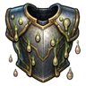
Acid Resistance C/B/A
C/B/A-rank passive. Armour that drinks acid: less burn damage. Knowing this lets the artisan make the acid resistance seal (rank by rank: knowing C makes C seals, and so on). Armour seal.
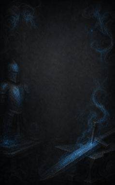
Technique trees › Crafting arts
24 techniques · Ninjutsu tab
Open to every ninja. How high a ninja can go depends on their ninja build.

C/B/A-rank passive. Armour that drinks acid: less burn damage. Knowing this lets the artisan make the acid resistance seal (rank by rank: knowing C makes C seals, and so on). Armour seal.
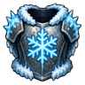
C/B/A-rank passive. Armour that holds off frost. Knowing this lets the artisan make the cold resistance seal (rank by rank: knowing C makes C seals, and so on). Armour seal.
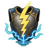
C/B/A-rank passive. Armour that grounds lightning. Knowing this lets the artisan make the electricity resistance seal (rank by rank: knowing C makes C seals, and so on). Armour seal.
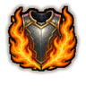
C/B/A-rank passive. Armour that holds off flame. Knowing this lets the artisan make the fire resistance seal (rank by rank: knowing C makes C seals, and so on). Armour seal.
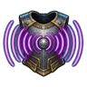
C/B/A-rank passive. Armour that deadens sound attacks. Knowing this lets the artisan make the sonic resistance seal (rank by rank: knowing C makes C seals, and so on). Armour seal.
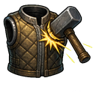
B-rank passive. Armour that softens crushing blows. Knowing this lets the artisan make the anti-impact seal. Armour seal.
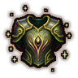
C-rank passive. Armour that keeps the wearer going: a little less damage. Knowing this lets the artisan make the enlivening seal. Armour seal.
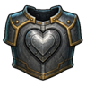
C-rank passive. Armour that helps the wearer stay standing through pain. Knowing this lets the artisan make the iron heart seal. Armour seal.
D-rank passive. Clothing that gives deep, quick rest. Knowing this lets the artisan make the pleasant dreams seal. Armour seal.
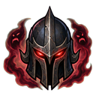
B-rank passive. Armour with a fearful aura: melee attackers may flee. Knowing this lets the artisan make the fearsome seal. Armour seal.
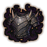
A-rank passive. Armour that instils dread: melee attackers may flee. Knowing this lets the artisan make the dread seal. Armour seal.
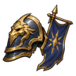
A-rank passive. Armour that gives the wearer presence. Knowing this lets the artisan make the commanding poise seal. Armour seal.
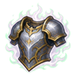
A-rank passive. Armour that steadies the mind. Knowing this lets the artisan make the great resolve seal. Armour seal.
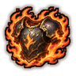
S-rank passive. The essence of a fire elemental in the armour: melee attackers burn. Knowing this lets the artisan make the burning seal. Armour seal.
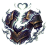
S-rank passive. Armour that heals its wearer. Knowing this lets the artisan make the chakra-eating seal. Armour seal.
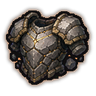
S-rank passive. The essence of an earth elemental in the armour. Knowing this lets the artisan make the stonemeld seal. Armour seal.
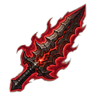
A-rank passive. A weapon that strikes fear: a hit can send the target running. Knowing this lets the artisan make the menacing seal. Weapon seal.
C-rank passive. A weapon that flashes on impact and can blind. Knowing this lets the artisan make the everbright seal. Weapon seal.
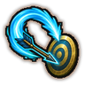
C-rank passive. A weapon that guides itself to the target: the wielder aims better. Knowing this lets the artisan make the guided seal. Weapon seal.
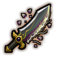
C-rank passive. Each hit heals the wielder a little. Knowing this lets the artisan make the revitalizing seal. Weapon seal.
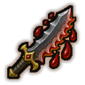
C-rank passive. A serrated edge that opens bleeding cuts. Knowing this lets the artisan make the serrated edge seal. Weapon seal.
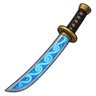
B-rank passive. A weapon that holds the chakra of one technique (B rank or lower), released later for a free cast. Knowing this lets the artisan make the jutsu well seal. Weapon seal.
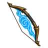
A-rank passive. A weapon that holds the chakra of one technique (A rank or lower), released later for a free cast. Knowing this lets the artisan make the jutsu carrier seal. Weapon seal.
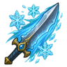
B-rank passive. A hit can slow the target. Knowing this lets the artisan make the slow burst seal. Weapon seal.